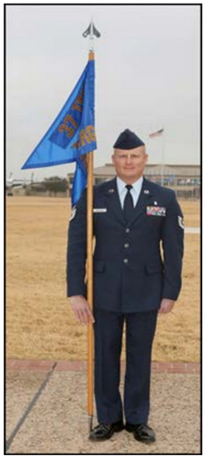
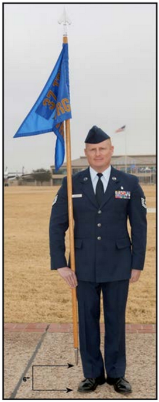
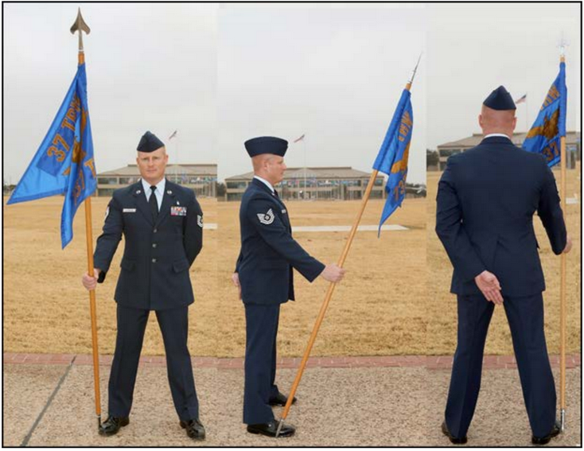
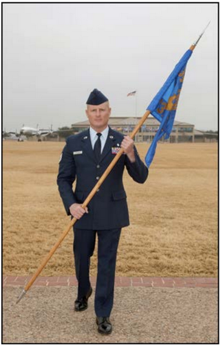

Section 5C - Manual of the Guidon
The guidon is carried at ceremonies and on other occasions when prescribed by the commander. The guidon bearer is a specially selected Airman designated by the squadron commander.
Order guidon is the position of attention as shown in the photo below. The guidon bearer holds the guidon in a vertical position and keeps the ferrule on the ground beside the right shoe. The guidon bearer holds the staff in the right hand in the 'V' formed by the thumb and by the fingers extended and joined. The right hand and arm are kept behind the staff with the arm bent naturally and the staff resting against the hollow of the shoulder.
Carry guidon is the position in which the ferrule is approximately 6 inches from the ground. Facings, alignments, and formal marchings require carry guidon. The guidon bearer keeps the staff in a vertical position throughout the movements and brings it to carry guidon on the preparatory command for the movement. When marching at route step or at ease, the guidon bearer may hold the guidon in either hand at the carry position.
Parade rest is executed by sliding the hand up the staff and inclining the staff of the guidon forward at arm's length with the hand at waist level.
At double time, the guidon bearer holds the guidon diagonally across the body. The guidon bearer grasps the staff with the right hand at the position used atthe carry, with the right forearm horizontal and the elbow near the body. The staff is graspedwith the left hand opposite the left shoulder.
When executing column movements and turns, the guidon bearer executes the movement on the command of execution and then moves at 45-degree angles to a position in front of the base file.
The guidon bearer lets the staff slide through the right hand until the ferrule is on the ground in line with and touching the toe of the right shoe. The staff is re-grasped with the hand as at the carry position.
The guidon bearer grasps the staff with the left hand while at the same time loosening the grip of the right hand on the staff. The guidon is raised vertically with the left hand, letting the staff slide upward through the right hand until the ferrule is approximately 6 inches from the ground. The guidon bearer then re-grasps the staff with the right hand and cuts the left hand away smartly to the left side.
To execute present guidon when at carry, or order guidon while marching or at a halt, on the preparatory command Present or Eyes, the guidon bearer raises the guidon vertically until the right arm is fully extended. At the same time, the left hand is brought smartly across the chest to guide the staff as shown. On the command of execution ARMS or RIGHT, the guidon bearer lowers the guidon straight to the front with the right arm extended and the staff resting in the pit of the arm, cutting the left hand away smartly to the left side. On the command RIGHT of Eyes, RIGHT, the guidon bearer turns the head and eyes in the same manner prescribed for other individuals in the formation. On the preparatory command Ready, the guidon bearer raises the guidon vertically until the right arm is fully extended. At the same time, the left hand is brought smartly across the chest to guide the staff as shown. On the command of execution FRONT, the guidon is returned to the position of carry, and the head and eyes are turned to the front.
On the preparatory command, the guidon bearer raises the staff to the vertical position and, at the same time, brings the left arm smartly across the chest to let the left hand guide the staff. On the command of execution, the guidon bearer loosens the grip of the left hand on the staff and lowers the guidon with the right hand. The left hand is used to steady the staff until the ferrule is approximately 6 inches from the ground, then the left hand is cut away smartly to the left side.
The guidon bearer executes order guidon as prescribed in the above paragraph except, after bringing the guidon to the carry position, the staff is permitted to slide through the right hand. The staff is steadied with the left hand until the guidon is in the position of order guidon, and the left hand is then cut smartly away to the left side.
When at order guidon, the guidon bearer executes the salute with the left hand in a two-count movement. On the first count, the left arm is moved horizontally across the body with forearm and wrist straight and fingers and thumb extended and joined with palm down. The first joint of the forefinger touches the staff. On the second count, the left hand is cut smartly away to the side. The salute at carry guidon is executed in the same manner except the ferrule is approximately 6 inches from the ground as shown.